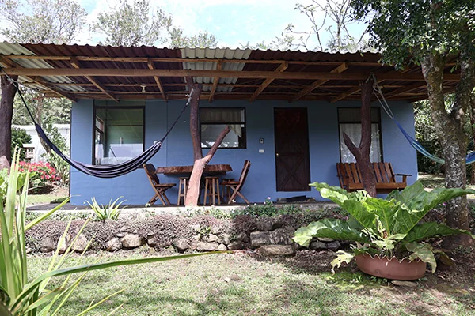
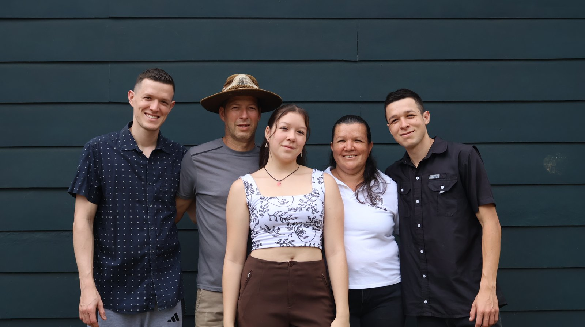
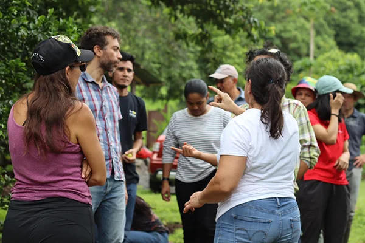

Nuestra casita campesina te espera
Nuestra casita es un espacio para vivir la esencia del campo. Te invitamos a hospedarte y descubrir la magia de despertar con el canto de las aves y el susurro del viento entre los árboles.
La naturaleza, la cultura y el bienestar se fusionan en nuestra finca agroecológica, mientras aprendes, compartes y reconectas con la tierra. Vive una escapatoria tranquila, una experiencia inolvidable y conecta con la tierra.
¿Qué esperas?
Nuestra finca es el lugar perfecto para ti.

Somos una familia de campesinos que creó un proyecto de vida para preservar la conexión con la tierra. En nuestra finca Agroecología Los Campesinos, ubicada en San Luis de Monteverde, ofrecemos experiencias auténticas que permiten a los visitantes sumergirse en la cultura rural y la agricultura sostenible.
Participa en actividades como sembrar orgánico, alimentar animales, cosechar productos frescos, hospedarte en un entorno natural y disfrutar de alimentos locales. Además, nos apasiona la conservación de las abejas sin aguijón, esenciales para la polinización y la salud de nuestros ecosistemas. A través de prácticas de meliponicultura, buscamos sensibilizar sobre su importancia y promover su protección.
Fomentamos una relación armoniosa entre la humanidad y el medio ambiente, educando sobre técnicas agrícolas sustentables y el uso responsable de los recursos naturales.

¿Quieres conocer cómo puedes ser parte de nuestro equipo de voluntarios?
Escríbenos para más información.
Quiero ser voluntario
Ven a visitarnos
San Luis,
Provincia de Puntarenas,
Monteverde, Costa Rica